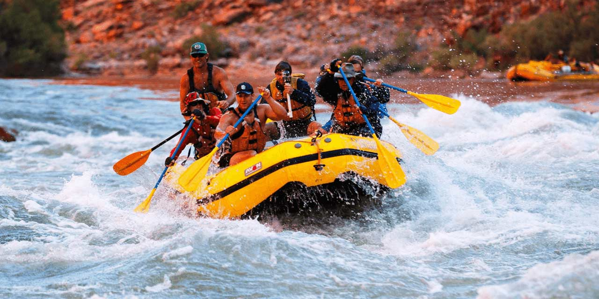
River Rafting in Rishikesh
Navigate through thrilling rapids on the sacred Ganga river.
Duration: 3-4 hours
Location: Rishikesh, Uttarakhand
Safety Tips: Wear life jackets, follow guide instructions.
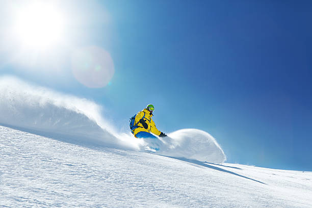
Skiing in Gulmarg
Grid through pristine snow slopes in Asia's finest skiing destination.
Duration: 3-4 hours per sessions
Location: Gulmarg, Kashmir
Safety Tips: Take lessons from certified instructors.
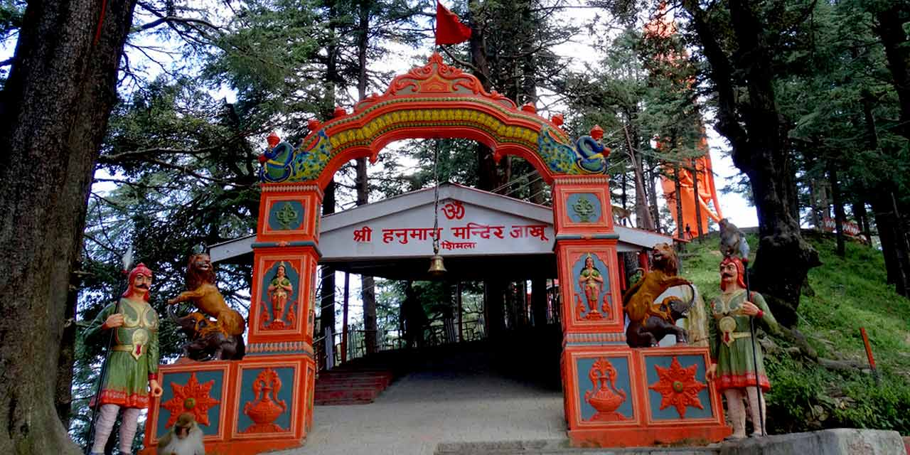
Jakhoo Temple Trek in Shimla
Trek to Shimla's highest point and visit the famous Hanuman Temple.
Duration: 2-3 hours
Location: Jakhoo Hill, shimla
Safety Tips: Start Early Morning, carry Water.

Triund Trek in Dharamshala
Experience breathtaking Himalayan views on this popular trek near McLeodGanj.
Duration: 4-6 hours(one-way)
Location: McLeodGanj, Dharamshala
Safety Tips: Start Early Morning, carry Water, wear appropriate footwear.

Mountain Biking in Leh-Ladakh
Ride through hide-altitude passes and barren, rugged mountain terrains.
Duration: Half-Day or Full-Day
Location: Khardung La, Leh-Ladakh
Safety Tips: Acclimatize properly before riding, wear a helmat and protective gear.

Paragliding in Manali
Soar high above the Solang Valley and take in panoramic views of the snow-capped peaks.
Duration: 15-20 minutes
Location: Solang Valley, Manali
Safety Tips: Fly only with certified tandem piolets.
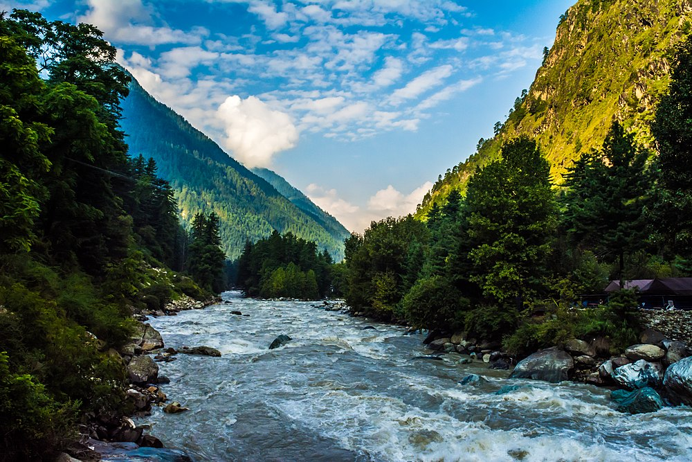
Kheerganga Trek in Kasol
Trek through the Parvati Valley and relex in the nature hot water springs at the summit.
Duration: 5-7 hours
Location: Parvati Valley, Kasol
Safety Tips: Stay on the market trail, carry a basic first-aid kit and warm layers.
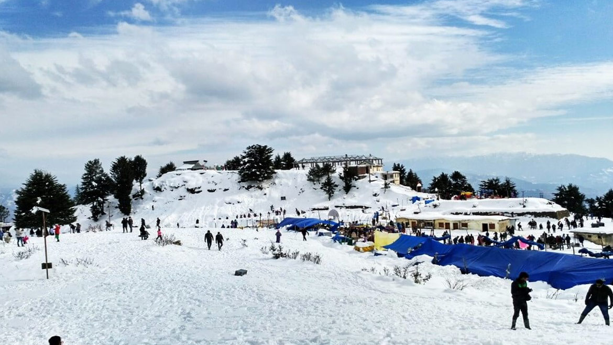
Snowboarding in Kufri
Enjoy Winter sports and slide down the snowy slopes of Mahasu Peak.
Duration: 1-2 hours
Location: Mahasu Peak, Kufri
Safety Tips: Wear Proper snow gear, start on the gentle slopes if you are a Beginner.
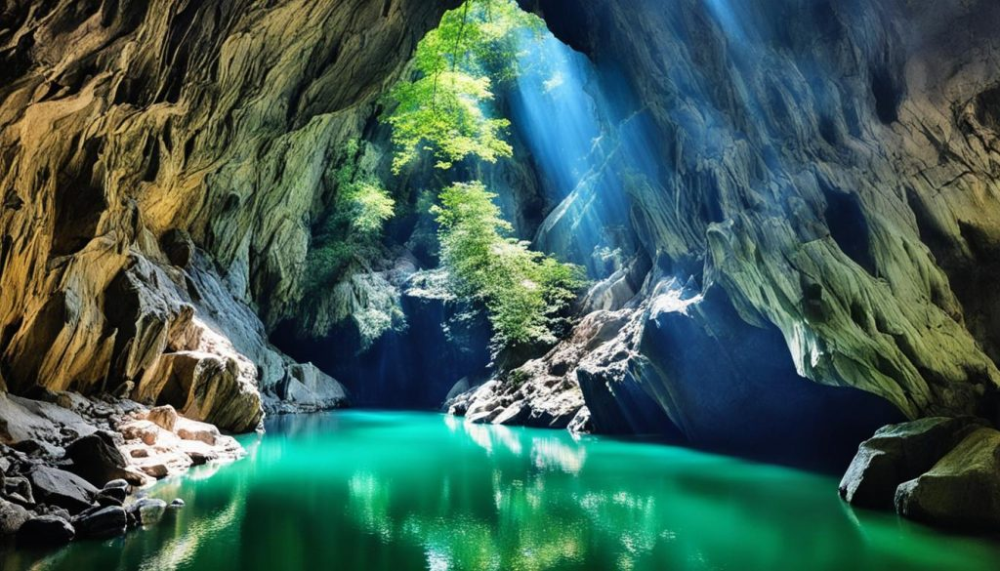
Cave Exploration in Dehradun
Wade through the Knee-deep waters of Robber's Cave in a narrow, natural gorge.
Duration: 1-2 hours
Location: Robber's Cave, Dehradun
Safety Tips: Wear water-resistant shoes, watch out for slippery rocks.
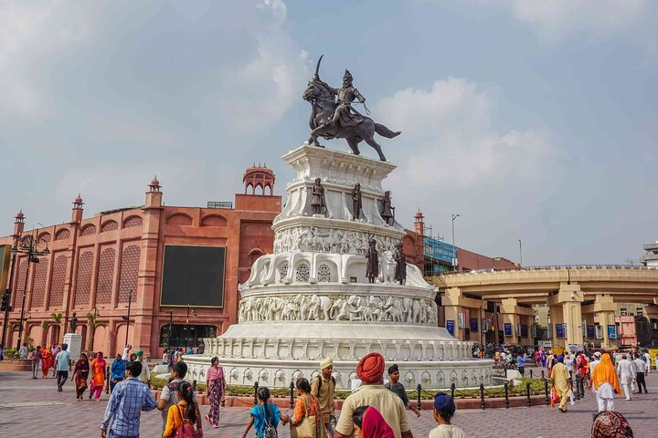
Heritage Walk in Amritsar
Immerse yourself in the rich history and spirituality surrounding the Golden Temple Complex.
Duration: 2-3 hours
Location: Golden Temple Area, Amritsar
Safety Tips: Dress Modestly, cover your head, and stay hydrated.
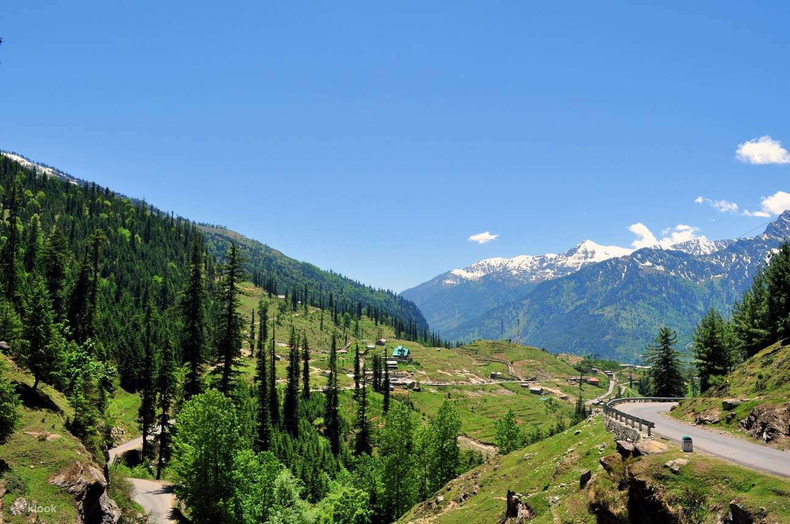
Nature Walk in Mussoorie
Take a serene walk along Camel's Back Road for stunning sunset views of the Himalayas.
Duration: 1-2 hours
Location: Camel's Back Road, Mussoorie
Safety Tips: Watch out for Monkeys, stick to the main paved road.
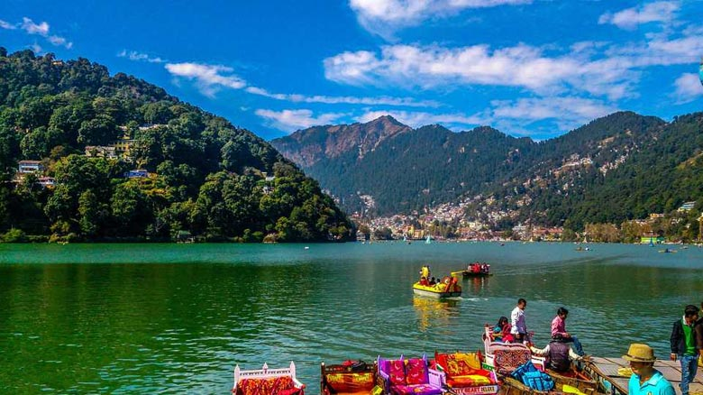
Boating in Nainital
Enjoy a peaceful rowboat or pedal boat ride on the iconic eye-shaped Naini Lake.
Duration: 30-60 minutes
Location: Naini Lake, Nainital
Safety Tips: Always wear a life jackets, do not stand up in the Boat.
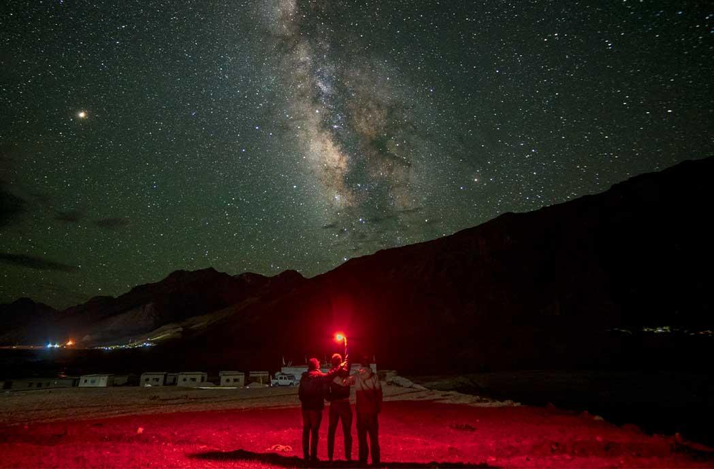
Stargazing in Spiti
Witness the Milky Way in all its glory from the high-altitude, pollution-free skies.
Duration: OverNight
Location: Kibber Village, Spiti
Safety Tips: Temperatures drop drastically at night, wear heavy thermal layers.
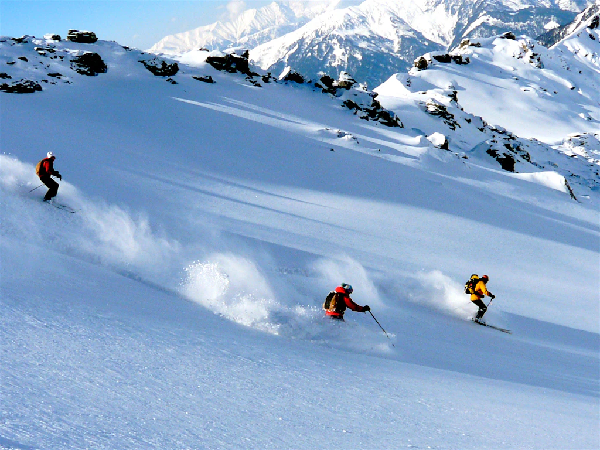
Skiing in Auli
Carve through the powder on some of India's longest and finest skiing slopes.
Duration: Half-Day or Full-Day
Location: Auli Ski Resort, Uttarakhand
Safety Tips: Use UV protection sunglasses, follow the designated ski routes.
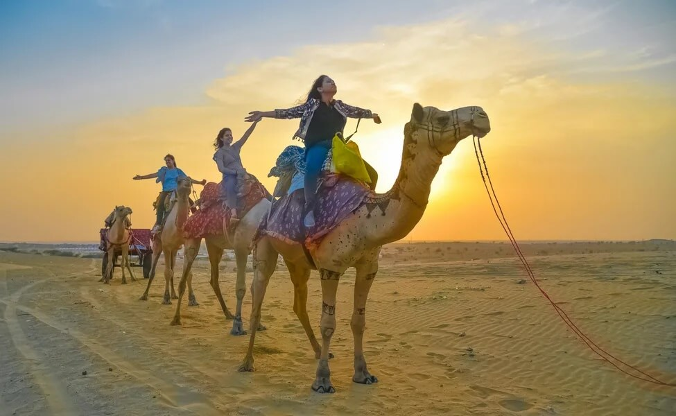
Camel Safari in Jaisalmer
Experience the magic of the Thar Desert under Starlit Skies.
Duration: 2 hours to OverNight
Location: Jaisalmer, Rajasthan
Safety Tips: Stay hydrated, wear sun protection, follow guide's instructions.